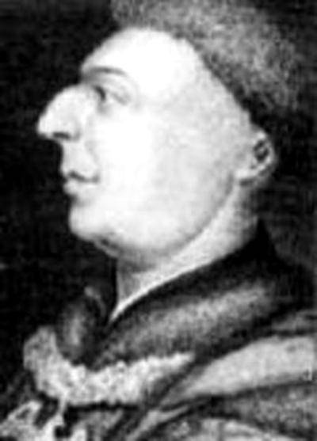

邓斯泰布尔（John Dunstable，约1390—1453）
是英国音乐的最突出的作曲家，当时有人说他的音乐是文艺复兴时期音乐的代表， 他写过一些经文歌，体现了英国音乐的特征，
约翰·邓斯泰布尔（John Dunstable，约1390—1453）是15世纪最伟大的英国作曲家， 他的才能不仅在同时代的英国作曲家中首屈一指，他的作品和音乐风格在欧洲大陆也有非常重要的影响。
邓斯泰布尔的姓氏显示了他可能出生在英国贝特福德郡的Dunstable镇，他曾经将自己的姓氏拼写为Dunstaple。 他大约出生在1390年，这个年份是根据他最早的能够确定年的作品——经文歌Veni sante spiritus和Preco preheminencie——的出现时间推测的。
这两部作品是在英王亨利五世庆祝阿金库特战役的胜利时产生的，而后又在1416年在坎特伯雷大教堂为英王和神圣罗马帝国皇帝西吉斯蒙德再一次演出。 这是唯一一组能确定邓斯泰布尔与坎特伯雷大教堂的联系的作品。这也显示了利奥纳尔·鲍尔（Leonel Power，？—1445， 他的很多作品都收入了《奥尔德霍尔藏搞》）可能知道邓斯泰布尔，甚至很可能曾经是邓斯泰布尔的老师。在同时代的手抄本中， 邓斯泰布尔和鲍尔的作品有很多相似之处。
其代表作有，《你是多么美丽，多么可爱》。
原文来自知乎用户：胡大水